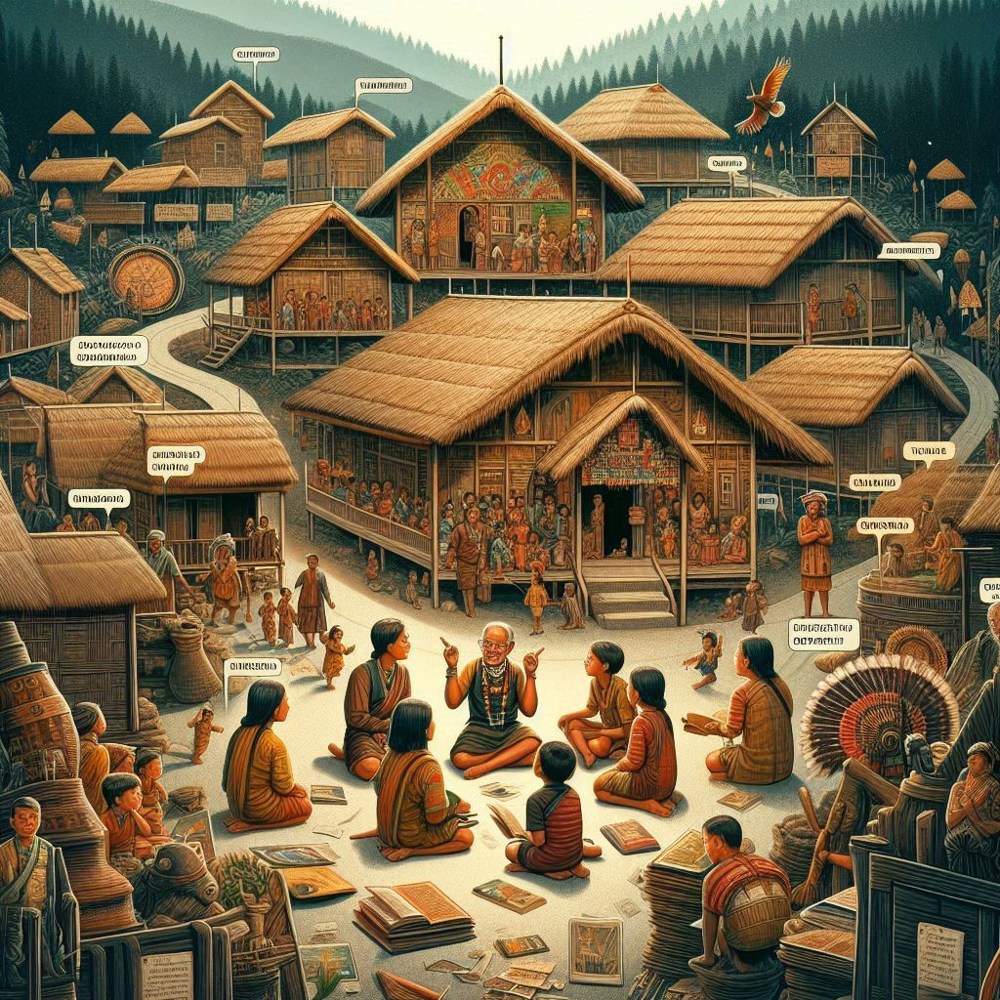
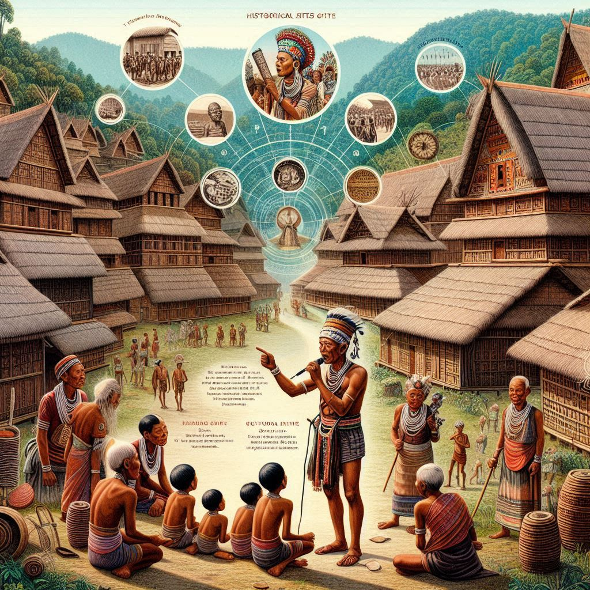

History of Meghalaya
Meghalaya, known for its rich cultural heritage and scenic beauty, has a fascinating history shaped by its indigenous communities, colonial influences, and post-independence developments.
Ancient and Early History
Meghalaya has a long history that dates back to ancient times. The region was inhabited by several indigenous tribes, including the Khasi, Garo, and Jaintia. These tribes have lived in the area for centuries, with unique customs, languages, and traditions. Archaeological evidence suggests that the area was influenced by early migrations from Southeast Asia, and the region was a melting pot of indigenous cultures.
Kingdoms and Tribal Rule
- Khasi and Jaintia Kingdoms: The Khasi and Jaintia tribes had established their own kingdoms with well-organized systems of governance, often led by chiefs or "Syiems." The Khasi kingdom was known for its matrilineal society, where lineage and inheritance were traced through the female line.
- Garo Kingdoms: The Garo tribe also had a traditional system of leadership, with village chiefs known as "Nokmas." The Garo hills were divided into several chiefdoms.
British Colonial Period (19th Century)
During the British colonial period, Meghalaya was part of Assam and was subjected to British control. The region was largely unaffected by direct colonial rule due to its difficult terrain and strong tribal resistance. However, the British did attempt to impose their authority on the region and establish some form of administration.
- Anglo-Khasi War (1829-1833): The Khasi tribes resisted British rule, resulting in a series of confrontations. The British ultimately subdued the Khasi forces, marking the beginning of indirect British rule over the region.
- Annexation of Jaintia Hills: The Jaintia Hills were annexed in the mid-19th century after several conflicts between the British and the local rulers.


Post-Independence and Formation of Meghalaya
- After India gained independence in 1947, Meghalaya continued to be part of Assam. However, the region's distinct cultural identity and the demand for autonomy led to the formation of a separate state.
- Creation of the State: In 1972, Meghalaya was officially carved out of Assam and became a full-fledged state. Initially, it was part of the North-Eastern Region, with Shillong as its capital. The formation of Meghalaya was the result of decades of political agitation and a desire for self-rule, spearheaded by the indigenous tribes who wanted to preserve their cultural heritage and control over their land.
Modern Day
- Development: Post-independence, Meghalaya has faced challenges such as political unrest, economic development, and ethnic tensions. However, it has also made progress in various sectors like tourism, education, and infrastructure.
- Ethnic Diversity: Despite its small geographical size, Meghalaya is home to a mix of ethnic communities, each with its own traditions, languages, and customs. The state's cultural richness and ecological importance continue to draw attention both nationally and internationally.
Notable Events and Figures
- Agitation for Statehood: Leaders like Captain Williamson Sangma, a prominent Garo leader, played a significant role in the political movements that led to the creation of Meghalaya as a separate state.
- The Khasi, Jaintia, and Garo Tribes: These tribes, with their rich traditions and distinct identities, have continued to shape the social, political, and cultural landscape of Meghalaya.
Conclusion
Meghalaya's history is marked by its indigenous roots, colonial resistance, and later, its fight for autonomy. Its tribal societies and vibrant culture remain central to the state's identity, even as it faces the challenges of modernization and development.